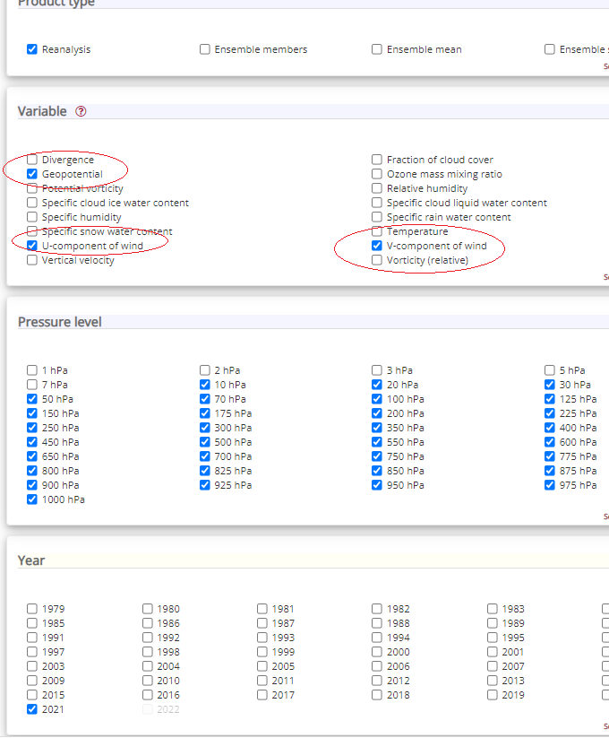
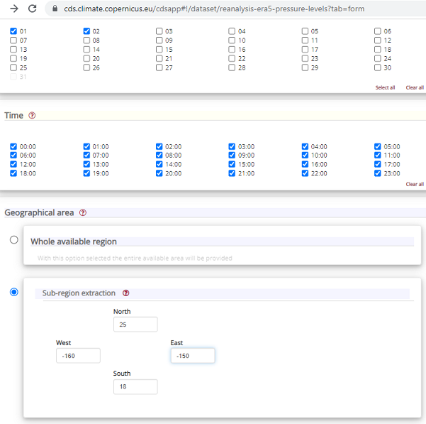
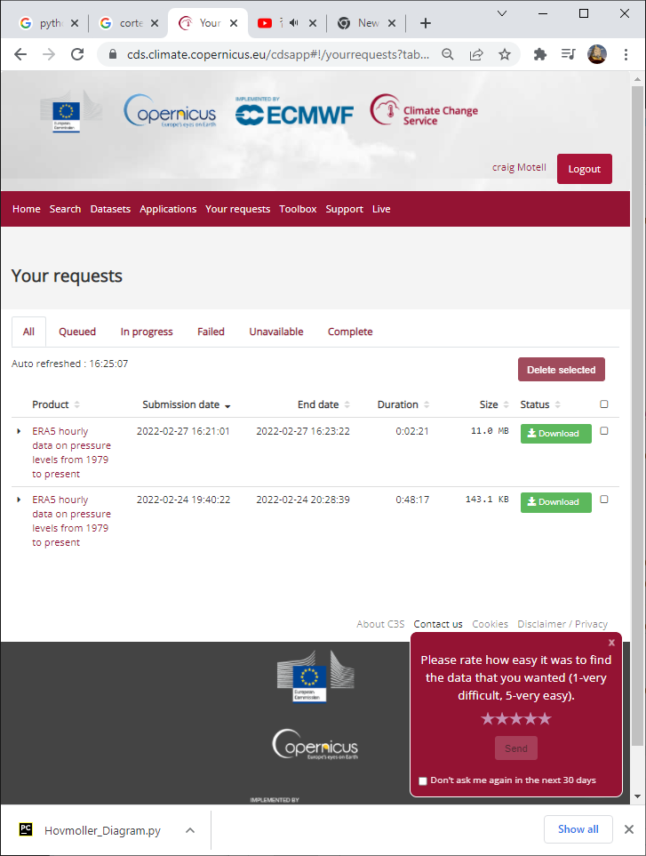

Downloading ERA5 Forecasts
ECMWF weather forecasts reanalysis data are downloaded from the Copernicus Climate Data Server. This website requires signing up for an account before being able to download data.
See also
“ERA5 is the fifth generation ECMWF reanalysis for the global climate and weather for the past 8 decades.
Reanalysis combines model data with observations from across the world into a globally complete and consistent dataset using the laws of physics. This principle, called data assimilation, is based on the method used by numerical weather prediction centres, where every so many hours (12 hours at ECMWF) a previous forecast is combined with newly available observations in an optimal way to produce a new best estimate of the state of the atmosphere, called analysis, from which an updated, improved forecast is issued. Reanalysis works in the same way, but at reduced resolution to allow for the provision of a dataset spanning back several decades. Reanalysis does not have the constraint of issuing timely forecasts, so there is more time to collect observations, and when going further back in time, to allow for the ingestion of improved versions of the original observations, which all benefit the quality of the reanalysis product. “
Download the reanalysis data from ERA5 hourly data on pressure levels from 1979 to present and navigating to the Download data tab.
The variables (requires all pressure levels) needed to forecast the balloon trajectories include:
Geopotential
U-component of wind
V-component of wind
Temperature
Let say you want data over the Hawaiian Islands for January 1-2, 2021, then a typical selection would look like:
 Be sure to select NetCDF (experimental) for the download format to use with EarthSHAB.
The data download request is then added to a queue and can be downloaded a later time (typically only takes a few minutes). Save the netcdf reanalysis file to the forecast directory and feel free to rename the file to something more useful.
Note
ECMWF reanalysis data is available every hour unlike GFS which is avilable in 3 hour increments.
The download option will look like the following:
Important
Thank you to Craig Motell and Michael Rodriquez from NIWC Pacific for contributing to the ERA5 feature.